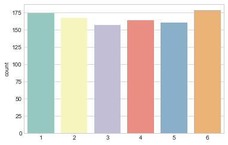
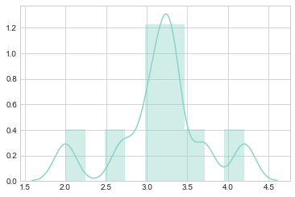
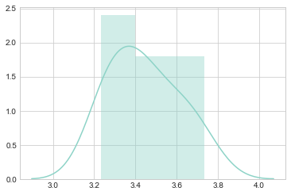
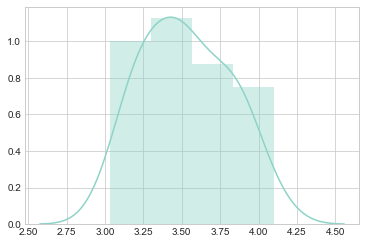
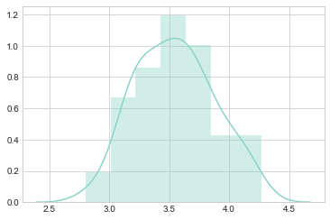
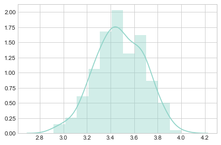

Central Limit Theorem
March 19, 2018
Central Limit Theorem
The central limit theorem states that the distribution of sampling means approaches a normal distribution as more samples are drawn, provided that the sample size of each sampling mean is at least 30 (based on a rule of thumb). This holds true regardless of the shape of the underlying distribution.
This definition is certainly not the easiest to comprehend, but understanding it is absolutely essential towards the application of inferential statistics.
We will break down and demonstrate the theorem using an example that should be palatable to most people - a simulation of a fair six-sided die.
Import Libraries
import numpy as np
import seaborn as sns
%matplotlib inline
Set Seaborn Visualisation Options
sns.set_style('whitegrid')
sns.set_palette('Set3')
Generate Dice Roll Dataset
We begin by generating the result of 1000 dice-rolls. While ideally we expect the results to be uniformly distributed, this is a random process and some variance is to be expected.
dice_rolls = np.random.randint(low=1, high=7, size=1000)
sns.countplot(dice_rolls)
<matplotlib.axes._subplots.AxesSubplot at 0x151e6d21e80>

To demonstrate the central limit theorem, we will first draw 10 samples (without replacement) of size 10 from our simulated dice rolls. We will store the average of each sample in a list and plot a histogram of the results.
Due to the low sample size, the sample means do not appear to follow any distribution.
sample_size = 10
no_samples = 10
sample_means = [np.mean(np.random.choice(dice_rolls, sample_size, replace=False)) for _ in range(no_samples)]
sns.distplot(sample_means)
<matplotlib.axes._subplots.AxesSubplot at 0x151e6df4470>

We next hold the number of samples constant and increase the sample size to 30. There is now less variance around the sample means, but I would still not consider it normally distributed.
sample_size = 30
no_samples = 10
sample_means = [np.mean(np.random.choice(dice_rolls, sample_size, replace=False)) for _ in range(no_samples)]
sns.distplot(sample_means)
<matplotlib.axes._subplots.AxesSubplot at 0x151e5971a90>

In our next iteration, we hold sample size constant and increase the number of samples to 30. You will see that the distribution of sampling means is more granular and takes on a slightly more normal shape.
sample_size = 30
no_samples = 30
sample_means = [np.mean(np.random.choice(dice_rolls, sample_size, replace=False)) for _ in range(no_samples)]
sns.distplot(sample_means)
<matplotlib.axes._subplots.AxesSubplot at 0x151e6f155c0>

Increasing the number of samples increases the granularity of the sampling means.
sample_size = 30
no_samples = 100
sample_means = [np.mean(np.random.choice(dice_rolls, sample_size, replace=False)) for _ in range(no_samples)]
sns.distplot(sample_means)
<matplotlib.axes._subplots.AxesSubplot at 0x151e6f64e80>

Lastly, for the sake of demonstration, we double both the sample size and number of samples to demonstrate its effect on the granularity of the distribution.
sample_size = 60
no_samples = 200
sample_means = [np.mean(np.random.choice(dice_rolls, sample_size, replace=False)) for _ in range(no_samples)]
sns.distplot(sample_means)
<matplotlib.axes._subplots.AxesSubplot at 0x151e6f97198>

Summary
- The sample means will be distributed roughly as a normal distribution around the population mean. In our example, the sample means (average of the dice rolls within each sample) will be normally distributed around the mean of our initial 1000 dice rolls.
- The above will be true regardless of the distribution of the underlying population. In our case, it did not matter that our underlying distribution was approximately uniform.